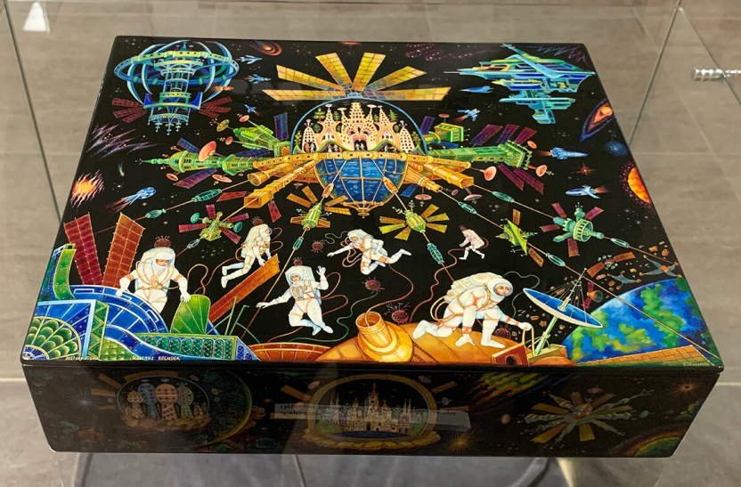
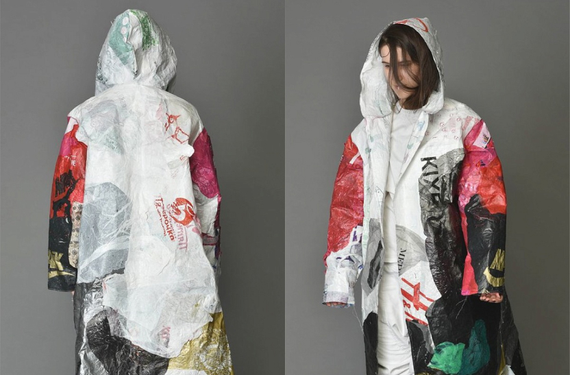

Живёте в Москве или собираетесь в столицу на выходные? Не упустите возможности посмотреть на коллекцию народных искусств в центре мегаполиса!
Всероссийский музей декоративного искусства — отличный шанс узнать больше о самых разных промыслах со всех уголков страны без необходимости кататься по этим уголкам. От памятников глубокой древности, когда люди только начали обживать территорию нынешней России, до более современных предметов, когда из ремесленных центров появляются заводы и цеха. От многовековых деревянных игрушек до шкатулок с мотивами Советского освоения космоса (выполненных в технике федоскинской миниатюры — без шуток).
Помимо этого, в музее постоянно открываются новые выставки на самые разные темы, но объединённые главным — отражением визуального наследия и переосмыслением народной памяти. Например, с 20 мая проходит выставка ВЕЩЬ! РЕ/КОНСТРУКЦИЯ, посвящённая отечественному дизайну XX — XXI веков. Экспозиция постоянная — и первая в стране.
